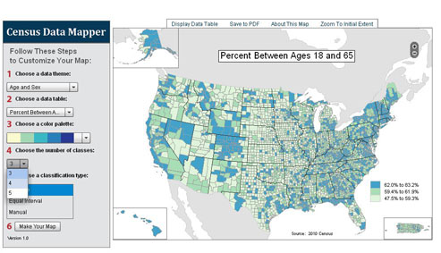
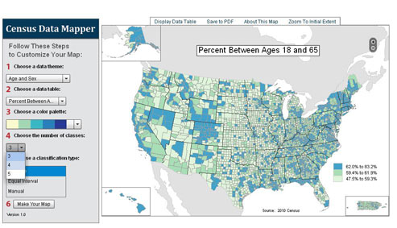
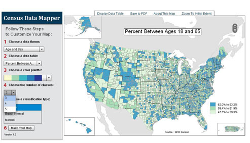

Data Visualization
Kelsey Hammer & Ellen Cline
05 December, 2016
This is an example.
What is data visualization?
Why do we care?

History
Is data visualization new?
Evolution
How has it changed?
Tools
Where do data scientists start? Find/Generate data -> Analyze -> Visualize
Good Examples
What does a good data visualization look like?
Bad Examples
What does a bad data visualization look like?
The Future?
Where are we headed?
Data Viz at UNC

 
